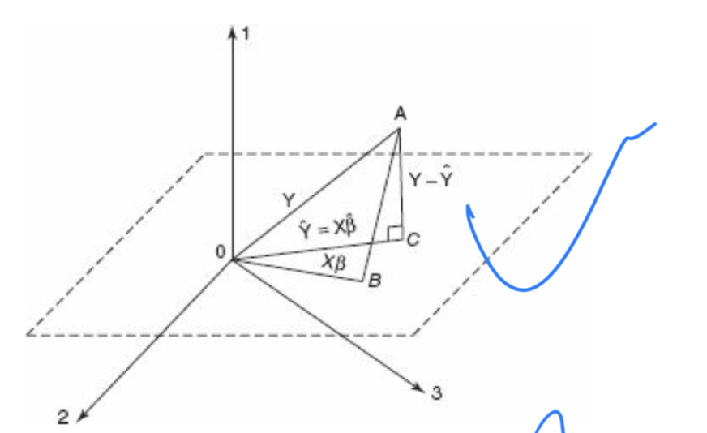

distribution transformation including multiple random variables
Distribution Transformation
Universality of the Uniform—From uniform you can get everything
Let u~unif(0,1), F be a CDF(assume F is strictly increased, continuous). Then there comes a theorem: \[ x = F^{-1}(u) \] Then \[ X \sim F \] (Proof: \[ P(X\leq x)=P(F^{-1}(u)\leq x)=P(F(F^{-1}(u))\leq F(x))=P(u\leq F(x))=F(x) \])
You can convert from the random uniforms to whatever you want to simulate. One example is the simulation of Logistic distribution: F(X)=\(e^x\)/(\(1+e^x\))
u~unif(0,1), \[ X = F^{-1}(u)=log(u/1-u) \] and X~F
Another example is that we could try to use uniform to simulate normal distribution:
The Box-Muller transform generates pairs of independent standard normally distributed (zero mean, unit variance) random numbers, given a source of uniformly distributed random numbers.
Given two independent random variables \(U_1\) and \(U_2\) that are uniformly distributed on the interval (0, 1), we can generate two independent standard normal random variables \(Z_0\) and \(Z_1\) using the following formulas:
\[ Z_0 = \sqrt{-2 \ln U_1} \cos(2 \pi U_2) \]
\[ Z_1 = \sqrt{-2 \ln U_1} \sin(2 \pi U_2) \]
Inversely, the example could be: let \(Z_0\) and \(Z_1\) be standard normal random variables with the following values: \(Z_0\) = 0.5 and \(Z_1\) = -1.0.
Compute CDF values:
For standard normal distribution, the CDF \[ \Phi(z) \] is given by:
\[ \Phi(z) = \frac{1}{2} \left[ 1 + \text{erf} \left( \frac{z}{\sqrt{2}} \right) \right] \]
(ps:\[ \text{erf}(x) = \frac{2}{\sqrt{\pi}} \int_{0}^{x} e^{-t^2} \, dt \])
For \[ Z_0 = 0.5 \]:
\[ \Phi(0.5) = \frac{1}{2} \left[ 1 + \text{erf} \left( \frac{0.5}{\sqrt{2}} \right) \right] \]
For \[ Z_1 = -1.0 \]:
\[ \Phi(-1.0) = \frac{1}{2} \left[ 1 + \text{erf} \left( \frac{-1.0}{\sqrt{2}} \right) \right] \]
Compute Uniform values:
Since the CDF values \[ \Phi(Z_0) \] and \[ \Phi(Z_1) \] are in the range [0, 1], we can directly use them as uniform random variables \(U_0\) and \(U_1\).
- \[U_0 = \Phi(0.5)\]
- \[U_1 = \Phi(-1.0)\]
Result:
- Using the error function values:
- \[ \Phi(0.5) \approx 0.6915 \]
- \[ \Phi(-1.0) \approx 0.1587 \]
Thus, the corresponding uniform distribution values are:
- \[ U_0 \approx 0.6915 \]
- \[ U_1 \approx 0.1587 \]
- Using the error function values:
Another example is that we can create a function that has good quality as F in the theorem, for example, \[ u=F(x)=1-e^{-x} (x>0) \] then we can simulate X~F:X=-ln(1-u)~F
Also, if \[ X \sim F \]
Then, \[ F(x) \sim unif(0,1) \] e.g. let X~F, if\[ F(x_0)=1/3\] then \[P(F(X)\leq 1/3)=P(X\leq x_0)=F(x_0)=1/3 \] which follows the uniform distribution(0,1) because 1/3 generates 1/3. (Uniform distribution: Probability(CDF) is proportional to length)
Normal Distribution
From Standard Normal Distribution to Normal Distribution
\(f(z)=ce^{-z^2/2}\) is a function with good qualities such as symmetric……..
To generate normalization constant c using CDF=1, instead of using impossible integral methods to compute it we should try to find the area under it. In that case, we transfer the integral shape to the double integral’s multiplication then we get c: \[ \int_{-\infty}^{\infty}\exp(-z^2/2) dz=\int_{-\infty}^{\infty}\exp(-z^2/2) dz=\int_{-\infty}^{\infty}\exp(-x^2/2)dx\int_{-\infty}^{\infty}\exp(-y^2/2)dy \] \[ =\int_{0}^{\infty}\exp(-r^2/2)r dr\int_{0}^{2π} d\theta\ =\sqrt2\pi\ \] So \[ c=1/\sqrt2\pi\ \] …….
From…..
111
Exponential distribution
the only one parameter is the rate parameter. The probability density function (pdf) of an exponential distribution with rate parameter (> 0) is given by:
\[ f_X(x) = \begin{cases} \lambda e^{-\lambda x} & \text{for } x \geq 0, \\ 0 & \text{for } x < 0. \end{cases} \] The cumulative distribution function (cdf) of an exponential distribution with rate parameter (> 0) is given by:
\[ F_X(x) = \begin{cases} 1 - e^{-\lambda x} & \text{for } x \geq 0, \\ 0 & \text{for } x < 0. \end{cases} \] 2.Let Y~x, then Y ~Expo(1)
proof: since \[ P(Y\leq y)=P(X\leq y/\lambda)=1-e^{-y} \] (just plot it into x) and we could check that E[X]=Var[X]=1, so X=Y/\(\lambda\) has E[x]=1/\(\lambda\), Var[x]=1/\(\lambda^2\)
e.g. Memoryless Property(This property implies that the remaining lifetime distribution does not depend on how much time has already elapsed.)(The exponential distribution is the only continuous distribution that has the memoryless property):\[ P(X\geq s+t|X\geq s)=P(X\geq t)\] which is actually satisfied by the exponential and we could prove it(though it intuitively makes sence): Here \[ P(X\geq s)=1-P(X\leq s)=e^{-\lambda s} \] \[ P(X \geq s+t \mid X \geq s)=\frac{P(X \geq s+t \text { and } X \geq s)}{P(X \geq s)} \]
Since \(X \geq s+t\) implies \(X \geq s\), we can simplify the numerator: \[ P(X \geq s+t \mid X \geq s)=\frac{P(X \geq s+t)}{P(X \geq s)} \]
Now, substitute the survival function for the exponential distribution: \[ P(X \geq s+t \mid X \geq s)=\frac{e^{-\lambda(s+t)}}{e^{-\lambda s}} \]
Simplify the expression: \[ P(X \geq s+t \mid X \geq s)=\frac{e^{-\lambda s} \cdot e^{-\lambda t}}{e^{-\lambda s}}=e^{-\lambda t} \]
Notice that \(e^{-\lambda t}=P(X \geq t)\) : \[ P(X \geq s+t \mid X \geq s)=P(X \geq t) \] usefulness of it: \[ X\sim Expo(\lambda),E(X|X>a)=a+E(X-a|X>a)=a+1/\lambda \]
e.g.2The hazard rate (or failure rate) for an exponential distribution is constant over time. For an exponential random variable \(X\) with rate parameter \(\lambda\), the hazard rate is: \[ h(t)=\frac{f_X(t)}{1-F_X(t)}=\lambda . \]
A constant hazard rate implies that the event is equally likely to occur at any point in time, which is a reasonable assumption for many processes, such as the lifetime of certain electronic components or the occurrence of certain types of random failures.
e.g.3 The exponential distribution is closely related to the Poisson process, which is a process that models the occurrence of events happening independently at a constant average rate. If the times between consecutive events in a Poisson process are independent and identically distributed, then these interarrival times follow an exponential distribution. This relationship makes the exponential distribution a natural choice in contexts where events occur randomly over time, such as phone calls arriving at a switchboard or buses arriving at a bus stop.
Ga
If r.v.X~N(0,1), then \(X^2\)~\(Ga\)(1/2,1/2)
Proof: If r.v. (X N(0,1)), then (X^2 (, ))
Let (X) be a random variable such that (X N(0,1)).
The probability density function (pdf) of (X) is: \[ f_X(x) = \frac{1}{\sqrt{2\pi}} e^{-\frac{x^2}{2}}, \quad -\infty < x < \infty. \]
First, we find the pdf of (Y = X^2).
The cumulative distribution function (CDF) of (Y) is given by: \[ F_Y(y) = P(Y \leq y) = P(X^2 \leq y). \]
Since (X^2 ), we only consider (y ): \[ F_Y(y) = P(-\sqrt{y} \leq X \leq \sqrt{y}). \]
Using the CDF of the normal distribution, we have: \[ F_Y(y) = \int_{-\sqrt{y}}^{\sqrt{y}} \frac{1}{\sqrt{2\pi}} e^{-\frac{x^2}{2}} \, dx. \]
The pdf of (Y) is the derivative of the CDF: \[ f_Y(y) = \frac{d}{dy} F_Y(y). \]
\[ F_Y(y) = 2 \int_{0}^{\sqrt{y}} \frac{1}{\sqrt{2\pi}} e^{-\frac{x^2}{2}} \, dx. \]
\[ F_Y(y) = 2 \int_{0}^{\sqrt{y}} \frac{1}{\sqrt{2\pi}} e^{-u} \frac{du}{\sqrt{2u}} = \frac{2}{\sqrt{2\pi}} \int_{0}^{\sqrt{y}} e^{-u} \frac{du}{\sqrt{2u}}. \]
Thus, \[ f_Y(y) = \frac{d}{dy} \left( \frac{2}{\sqrt{2\pi}} \int_{0}^{\sqrt{y}} e^{-u} \frac{du}{\sqrt{2u}} \right). \]
Differentiating with respect to y gives: \[ f_Y(y) = \frac{1}{\sqrt{2\pi}} \cdot e^{-\frac{y}{2}} \cdot y^{-\frac{1}{2}}. \]
Simplifying, we get: \[ f_Y(y) = \frac{1}{\sqrt{2\pi}} y^{-\frac{1}{2}} e^{-\frac{y}{2}}. \]
\[ Y = X^2 \sim \text{Ga}\left(\frac{1}{2}, \frac{1}{2}\right). \]
Chi-square
Chi-square is a
1.Let ( \(Z_1\), \(Z_2\), , \(Z_i\) ) are independent standard normal random variables(i.e. Z~N(0,1)), then the random variable ( X ) defined by
\[ X = Z_1^2 + Z_2^2 + \cdots + Z_i^2 \] (\(Z_j\)~iid.N(0,1))
follows a chi-square distribution with ( i ) degrees of freedom. So chi-square of 1 is the same thing as Gamma of (1/2,1/2) so chi-square of n is Gamma(n/2,1/2)
2.If \[ Z_i = \frac{x_i - \mu}{\sigma} \] The sum of squared standardized deviations is:
\[ \sum_{i=1}^n Z_i^2 = \sum_{i=1}^n \left( \frac{x_i - \mu}{\sigma} \right)^2 = \frac{1}{\sigma^2} \sum_{i=1}^n (x_i - \mu)^2 \]
Let \(x_1, x_2, \cdots, x_n\) be samples of \(N\left(\mu, \sigma^2\right)\) , \(\mu\) is a known constant, find the distribution of statistics: \[ T=\sum_{i=1}^n\left(x_i-\mu\right)^2 \]
sol: \(y_i=\left(x_i-\mu\right) / \sigma, i=1,2, \cdots, n\), 则 \(y_1, y_2, \cdots, y_n\) are iid r.v. of \(N(0,1)\),so\[ \frac{T}{\sigma^2}=\sum_{i=1}^n\left(\frac{x_i-\mu}{\sigma}\right)^2=\sum_{i=1}^n y_i^2 \sim \chi^2(n), \] (i.e.\[ \sum_{i=1}^n Z_i^2 {\sigma^2}\sim \chi^2(n)\])
Besides, \(T\)’s PDF is \[ p(t)=\frac{1}{\left(2 \sigma^2\right)^{n / 2} \Gamma(n / 2)} \mathrm{e}^{-\frac{1}{2 \sigma^2} t^{\frac{n}{2}}-1}, \quad t>0, \]
which is Gamma distribution \(G a\left(\frac{n}{2}, \frac{1}{2 \sigma^2}\right) \cdot\)
3.chi-square is uesful because of theorems below:let \(x_1, x_2, \cdots, x_n\) are samples from \(N\left(\mu, \sigma^2\right)\) , whose sample mean and sample variance are\[ \bar{x}=\frac{1}{n} \sum_{i=1}^n x_i \text { and } s^2=\frac{1}{n-1} \sum_{i=1}^n\left(x_i-\bar{x}\right)^2, \]
then we can get: (1) \(\bar{x}\) and \(s^2\) are independent; (2) \(\bar{x} \sim N\left(\mu, \sigma^2 / n\right)\); (3) \(\frac{(n-1) s^2}{\sigma^2} \sim \chi^2(n-1)\).
Proof: \[ p\left(x_1, x_2, \cdots, x_n\right)=\left(2 \pi \sigma^2\right)^{-n / 2} \mathrm{e}^{-\sum_{i=1}^n \frac{\left(x_i-\mu\right)^2}{2 \sigma^2}}=\left(2 \pi \sigma^2\right)^{-n / 2} \exp \left\{-\frac{\sum_{i=1}^n x_i^2-2 n \bar{x} \mu+n \mu^2}{2 \sigma^2}\right\} \]
denote\(\boldsymbol{X}=\left(x_1, x_2, \cdots, x_n\right)^{\mathrm{T}}\), then we create an \(n\)-dimension orthogonal \(\boldsymbol{A}\) and every element in the first row is \(1 / \sqrt{n}\), such as \[ A=\left(\begin{array}{ccccc} \frac{1}{\sqrt{n}} & \frac{1}{\sqrt{n}} & \frac{1}{\sqrt{n}} & \cdots & \frac{1}{\sqrt{n}} \\ \frac{1}{\sqrt{2 \cdot 1}} & -\frac{1}{\sqrt{2 \cdot 1}} & 0 & \cdots & 0 \\ \frac{1}{\sqrt{3 \cdot 2}} & \frac{1}{\sqrt{3 \cdot 2}} & -\frac{2}{\sqrt{3 \cdot 2}} & \cdots & 0 \\ \vdots & \vdots & \vdots & & \vdots \\ \frac{1}{\sqrt{n(n-1)}} & \frac{1}{\sqrt{n(n-1)}} & \frac{1}{\sqrt{n(n-1)}} & \cdots & -\frac{n-1}{\sqrt{n(n-1)}} \end{array}\right), \] 令 \(\boldsymbol{Y}=\left(y_1, y_2, \cdots, y_n\right)^{\mathrm{T}}=\boldsymbol{A} \boldsymbol{X}\), \(|Jacobi|=1\), and we can find thatt\[ \begin{gathered} \bar{x}=\frac{1}{\sqrt{n}} y_1, \\ \sum_{i=1}^n y_i^2=\boldsymbol{Y}^{\mathrm{T}} \boldsymbol{Y}=\boldsymbol{X}^{\mathrm{T}} \boldsymbol{A}^{\mathrm{T}} \boldsymbol{A} \boldsymbol{X}=\sum_{i=1}^n x_i^2, \end{gathered} \]
so\(y_1, y_2, \cdots, y_n\) ’s joint density function is \[ \begin{aligned} p\left(y_1, y_2, \cdots, y_n\right) & =\left(2 \pi \sigma^2\right)^{-n / 2} \exp \left\{-\frac{\sum_{i=1}^n y_i^2-2 \sqrt{n} y_1 \mu+n \mu^2}{2 \sigma^2}\right\} \\ & =\left(2 \pi \sigma^2\right)^{-n / 2} \exp \left\{-\frac{\sum_{i=2}^n y_i^2+\left(y_1-\sqrt{n} \mu\right)^2}{2 \sigma^2}\right\} \end{aligned} \]
So, \(\boldsymbol{Y}=\left(y_1, y_2, \cdots, y_n\right)^{\mathrm{T}}\) independently distributed as normal distribution and their variances are all equal to\(\sigma^2\), but their means are not all the same because \(y_2, \cdots, y_n\) ’s means are \(0, y_1\)’s is \(\sqrt{n} \mu\), which ends our proof of (2). \[ (n-1) s^2=\sum_{i=1}^n\left(x_i-\bar{x}\right)^2=\sum_{i=1}^n x_i^2-(\sqrt{n} \bar{x})^2=\sum_{i=1}^n y_i^2-y_1^2=\sum_{i=2}^n y_i^2, \]
This proves conclusion (1). Since \(y_2, \cdots, y_n\) are independently and identically distributed as \(N\left(0, \sigma^2\right)\), we have: \[ \frac{(n-1) s^2}{\sigma^2}=\sum_{i=2}^n\left(\frac{y_i}{\sigma}\right)^2 \sim \chi^2(n-1) . \]
Theorem is proved. (similar to the proof above this maybe easier to understand:\(\begin{aligned} & i z\left(Y_1, Y_2, \cdots, Y_2\right)^{\top}=A\left(X_1, \cdots, x_n\right)^{\top} \\ & \text { then } \sum_{i=1}^n Y_i^2=\left(Y_1, \cdots, Y_n\right)\left(Y_1, \cdots, Y_n\right)^{\top} \\ & =\left[A\left(x_1, \cdots, x_n\right)^{\top}\right]^{\top}\left[A\left(x_1, \cdots, X_n\right)^{\top}\right] \\ & =\left(x_1, \cdots, x_n\right) A^{\top} A\left(x_1, \cdots, x_n\right)^{\top} \\ & =\left(x_1, \cdots, x_n\right) E\left(x_1, \cdots, x_n\right)^{\top}=\sum_{i=1}^n x_i^2 \\ & \end{aligned}\)) \(\begin{aligned} & \text { besides } Y_1=\frac{1}{\sqrt{n}} x_1+\cdots+\frac{1}{\sqrt{n}} x_n=\frac{1}{\sqrt{n}} \sum_{i=1}^n X_i \\ & \text { and } Y_1=\sqrt{n} \cdot \frac{1}{n} \sum_{i=1}^n X_i=\sqrt{n} \bar{X}, \text { then } \bar{x}=\frac{1}{\sqrt{n}} y_i \\ & B S^2=\frac{1}{n-1} \sum_{i=1}^n\left(x_i-\bar{x}\right)^2=\frac{1}{n-1}\left[\sum_{i=1}^n x_i^2-n \bar{x}^2\right] \\ & =\frac{1}{n-1}\left[\sum_{i=1}^n Y_i^2-Y_1^2\right]=\frac{1}{n-1} \sum_{i=2}^n Y_i^2 \\ & 2 \oplus L=(\sqrt{2 \pi} \sigma)^{-n} \exp \left[-\frac{1}{2 \sigma^2} \sum_{i=1}^n\left(x_i-\mu\right)^2\right] \text {. } \\ & =(\sqrt{2 \pi} \sigma)^{-n} \exp \left[-\frac{1}{2 \sigma^2}\left(\sum_{i=1}^n x_i^2-2 \mu n \bar{x}+\mu^2 n\right]\right. \\ & =(\sqrt{2 \pi} \sigma)^{-n} \exp \left[-\frac{1}{2 \sigma^2}\left(\sum_{1=1}^n y_i{ }^2-2 \mu n \frac{1}{\sqrt{n}} Y_1+n \mu^2\right]\right. \\ & \end{aligned}\) \[=(\sqrt2\pi\sigma)^{-1}exp[-1/2\sigma^2(Y_1-\sqrt nu)^2]×(\sqrt2\pi\sigma)^{-1}exp[-1/2\sigma^2{Y_2}^2]*...*(\sqrt2\pi\sigma)^{-1}exp[-1/2\sigma^2{Y_n}^2] \]
So L is \(Y_1\)…\(Y_n\)’s joint density function and so they are independent. Besides, we have proved that its mean is \(1/\sqrt n\)\(Y_1\) and \(S^2\)=\(1/n-1 \Sigma{i=2}Y_i^2\), so the normal distribution’s mean and variance are independent.
When the random variable \(\chi^2 \sim \chi^2(n)\), for a given \(\alpha\) (where \(0<\) \(\alpha<1\) ), the value \(\chi_{1-\alpha}^2(n)\) satisfying the probability equation \(P\left(\chi^2 \leqslant \chi_{1-\alpha}^2(n)\right)=1-\) \(\alpha\) is called the \(1-\alpha\) quantile of the \(\chi^2\) distribution with \(n\) degrees of freedom.
Suppose the random variables \(X_1 \sim \chi^2(m)\) and \(X_2 \sim \chi^2(n)\), and \(X_1\) and \(X_2\) are independent. Then the distribution of \(F=\frac{X_1 / m}{X_2 / n}\) is called the \(\mathrm{F}\) distribution with \(m\) and \(n\) degrees of freedom, denoted as \(F \sim F(m, n)\). Here, \(m\) is called the numerator degrees of freedom and \(n\) the denominator degrees of freedom. We derive the density function of the \(\mathrm{F}\) distribution in two steps. First, we derive the density function of \(Z=\frac{X_1}{X_2}\). Let \(p_1(x)\) and \(p_2(x)\) be the density functions of \(\chi^2(m)\) and \(\chi^2(n)\) respectively. According to the formula for the distribution of the quotient of independent random variables, the density function of \(Z\) is: \[ \begin{gathered} p_Z(z)=\int_0^{\infty} x_2 p_1\left(z x_2\right) p_2\left(x_2\right) \mathrm{d} x_2 \\ =\frac{z^{\frac{m}{2}-1}}{\Gamma\left(\frac{m}{2}\right) \Gamma\left(\frac{n}{2}\right) 2^{\frac{m+n}{2}}} \int_0^{\infty} x_2^{\frac{n}{2}-1} e^{-\frac{x_2}{2}(1+z)} \mathrm{d} x_2 . \end{gathered} \]
Using the transformation \(u=\frac{x_2}{2}(1+z)\), we get: \[ p_Z(z)=\frac{z^{\frac{m}{2}-1}(1+z)^{-\frac{m+n}{2}}}{\Gamma\left(\frac{m}{2}\right) \Gamma\left(\frac{n}{2}\right)} \int_0^{\infty} u^{\frac{n}{2}-1} e^{-u} \mathrm{~d} u \]
The final integral is the gamma function \(\Gamma\left(\frac{n}{2}\right)\), so: \[ p_Z(z)=\frac{\Gamma\left(\frac{m+n}{2}\right)}{\Gamma\left(\frac{m}{2}\right) \Gamma\left(\frac{n}{2}\right)} z^{\frac{m}{2}-1}(1+z)^{-\frac{m+n}{2}}, \quad z \geq 0 . \]
Second, we derive the density function of \(F=\frac{n}{m} Z\). Let the value of \(F\) be \(y\). For \(y \geq 0\), we have: \[ \begin{aligned} p_F(y) & =p_Z\left(\frac{m}{n} y\right) \cdot \frac{m}{n}=\frac{\Gamma\left(\frac{m+n}{2}\right)}{\Gamma\left(\frac{m}{2}\right) \Gamma\left(\frac{n}{2}\right)}\left(\frac{m}{n} y\right)^{\frac{m}{2}-1}\left(1+\frac{m}{n} y\right)^{-\frac{m+n}{2}} \cdot \frac{m}{n} \\ & =\frac{\Gamma\left(\frac{m+n}{2}\right)}{\Gamma\left(\frac{m}{2}\right) \Gamma\left(\frac{n}{2}\right)}\left(\frac{m}{n}\right)\left(\frac{m}{n} y\right)^{\downarrow \frac{2}{2}-1}\left(1+\frac{m}{n} y\right)^{-\frac{m+n}{2}} \end{aligned} \]
When the random variable \(F \sim F(m, n)\), for a given \(\alpha\) (where \(0<\alpha<1\) ), the value \(F_{1-\alpha}(m, n)\) satisfying the probability equation \(P\left(F \leqslant F_{1-\alpha}(m, n)\right)=1-\alpha\) is called the \(1-\alpha\) quantile of the \(\mathrm{F}\) distribution with \(m\) and \(n\) degrees of freedom. By the construction of the \(\mathrm{F}\) distribution, if \(F \sim F(m, n)\), then \(1 / F \sim F(n, m)\). Therefore, for a given \(\alpha\) (where \(0<\alpha<1\) ), \[ \alpha=P\left(\frac{1}{F} \leqslant F_\alpha(n, m)\right)=P\left(F \geqslant \frac{1}{F_\alpha(n, m)}\right) . \]
Thus, \[ P\left(F \leqslant \frac{1}{F_\alpha(n, m)}\right)=1-\alpha \]
This implies \[ F_\alpha(n, m)=\frac{1}{F_{1-\alpha}(m, n)} . \]
Corollary Suppose \(x_1, x_2, \cdots, x_m\) is a sample from \(N\left(\mu_1, \sigma_1^2\right)\) and \(y_1, y_2, \cdots, y_n\) is a sample from \(N\left(\mu_2, \sigma_2^2\right)\), and these two samples are independent. Let: \[ s_x^2=\frac{1}{m-1} \sum_{i=1}^m\left(x_i-\bar{x}\right)^2, \quad s_y^2=\frac{1}{n-1} \sum_{i=1}^n\left(y_i-\bar{y}\right)^2, \] where \[ \bar{x}=\frac{1}{m} \sum_{i=1}^m x_i, \quad \bar{y}=\frac{1}{n} \sum_{i=1}^n y_i \] then \[ F=\frac{s_x^2 / \sigma_1^2}{s_y^2 / \sigma_2^2} \sim F(m-1, n-1) . \]
In particular, if \(\sigma_1^2=\sigma_2^2\), then \(F=\frac{s_x}{s_y^2} \sim F(m-1, n-1)\). Proof: Since the two samples are independent, \(s_x^2\) and \(s_y^2\) are independent. According to a Theorem , we have \[ \frac{(m-1) s_x^2}{\sigma_1^2} \sim \chi^2(m-1), \quad \frac{(n-1) s_y^2}{\sigma_2^2} \sim \chi^2(n-1) . \]
By the definition of the \(\mathrm{F}\) distribution, \(F \sim F(m-1, n-1)\). Corollary: Suppose \(x_1, x_2, \cdots, x_n\) is a sample from a normal distribution \(N\left(\mu, \sigma^2\right)\), and let \(\bar{x}\) and \(s^2\) denote the sample mean and sample variance of the sample, respectively. Then \[ t=\frac{\sqrt{n}(\bar{x}-\mu)}{s} \sim t(n-1) . \]
Proof: From a Theorem we obtain \[ \frac{\bar{x}-\mu}{\sigma / \sqrt{n}} \sim N(0,1) \]
Then, \[ \frac{\sqrt{n}(\bar{x}-\mu)}{s}=\frac{\frac{\bar{x}-\mu}{\sigma / \sqrt{n}}}{\sqrt{\frac{(n-1) s^2 / \sigma^2}{n-1}}} \]
Since the numerator is a standard normal variable and the denominator’s square root contains a \(\chi^2\) variable with \(n-1\) degrees of freedom divided by its degrees of freedom, and they are independent, by the definition of the \(t\) distribution, \(t \sim t(n-1)\). The proof is complete.
Corollary: In the notation of Corollary , assume \(\sigma_1^2=\sigma_2^2=\sigma^2\), and let \[ s_w^2=\frac{(m-1) s_x^2+(n-1) s_y^2}{m+n-2}=\frac{\sum_{i=1}^m\left(x_i-\bar{x}\right)^2+\sum_{i=1}^n\left(y_i-\bar{y}\right)^2}{m+n-2} \]
Then \[ \frac{(\bar{x}-\bar{y})-\left(\mu_1-\mu_2\right)}{s_w \sqrt{\frac{1}{m}+\frac{1}{n}}} \sim t(m+n-2) \]
Proof: Since \(\bar{x} \sim N\left(\mu_1, \frac{\sigma^2}{m}\right), \bar{y} \sim N\left(\mu_2, \frac{\sigma^2}{n}\right)\), and \(\bar{x}\) and \(\bar{y}\) are independent, we have
\[ \bar{x}-\bar{y} \sim N\left(\mu_1-\mu_2,\left(\frac{1}{m}+\frac{1}{n}\right) \sigma^2\right) . \]
Thus, \[ \frac{(\bar{x}-\bar{y})-\left(\mu_1-\mu_2\right)}{\sigma \sqrt{\frac{1}{m}+\frac{1}{n}}} \sim N(0,1) . \]
By a Theorem , we know that \(\frac{(m-1) s_x^2}{\sigma^2} \sim \chi^2(m-1)\) and \(\frac{(n-1) s_y^2}{\sigma^2} \sim \chi^2(n-1)\), and they are independent. By additivity, we have \[ \frac{(m+n-2) s_w^2}{\sigma^2}=\frac{(m-1) s_x^2+(n-1) s_y^2}{\sigma^2} \sim \chi^2(m+n-2) . \]
Since \(\bar{x}-\bar{y}\) and \(s_w^2\) are independent, by the definition of the \(\mathrm{t}\) distribution, we get the desired result. \(\square\)
One interesting example shows the relationship of above distributions used charismatically to solve problems: r.v.: \(X_1 ， X_2 ， X_3 ， X_4\) indpendently identically distribute(iid) as \(N\left(0 . \sigma^2\right)\). \(Z=\left(x_1^2+x_2^2\right) /\left(x_1^2+x_2^2+x_3^2+x_4^2\right)\) prove: \(Z \sim U(0.1)\). \[ \begin{aligned} & \text { Solution: } Let Y=\frac{X_3^2+X_4^2}{X_1^2+X_2^2}=\frac{\left[\left(\frac{X_3}{\sigma}\right)^2+\left(\frac{X_4}{\sigma}\right)^2\right] / 2}{\left[\left(\frac{X_1}{\sigma}\right)^2+\left(\frac{X_2}{\sigma}\right)^2\right] / 2} \sim F(2,2) . \\ & \text { i.e. } f_Y(y)=\frac{1}{(1+y)^2}, y>0 \\ & \text { then } P(Z \leq z)=P\left(\frac{1}{1+Y} \leq z\right)=P\left(Y \geqslant \frac{1}{z}-1\right) \\ & =\int_{\frac{1}{z}-1}^{+\infty} \frac{1}{(1+y)^2} d y=z \quad \text { H } 0<z<1 . \\ & \therefore Z \sim U(0.1) \end{aligned} \] (ps:$
\[\begin{aligned} & f(x)=\frac{\Gamma\left(\frac{n_1+n_2}{2}\right)}{\Gamma\left(\frac{n_2}{2}\right) \Gamma\left(\frac{n_1}{2}\right)}\left(\frac{n_1}{n_2}\right)\left(\frac{n_1}{n_2} x\right)^{\frac{n_1}{2}-1}\left(1+\frac{n_1}{n_2} x\right)^{\frac{-1}{2}\left(n_1+n_2\right)} . \\ & \text { of these } x>0 \text {. and } E(x)=\frac{n_2}{n_2-2} \text {, when } n_2>2 \text {. } \\ & \operatorname{Var}(X)=\frac{2 n_2^2\left(n_1+n_2-2\right)}{n_1\left(n_2-2\right)^2\left(n_2-4\right)} \text {when $n_2>4$. } \\ & \end{aligned}\]
#PDF functions’s transformation(from books)
Standard normal distribution
Pdf : \(f(x) = \frac{1}{\sqrt{2\pi}} e^{-\frac{x^2}{2}}\)
Chi-square distribution
From standard normal distribution \(f(x) = \frac{1}{\sqrt{2\pi}} e^{-\frac{x^2}{2}}\), we want to get Chi-square distribution \(f(x; k) = \frac{1}{2^{k/2} \Gamma(k/2)} x^{k/2 - 1} e^{-x/2}\)
Assuming that \(Z \sim N(0, 1)\)
\(W=Z^2\)
So we can deduce the pdf for the variable W \[
\begin{align}
f_W(w)&=Pr(Z^2=w)\\
& =f_Z(\sqrt{w}) \left| \frac{d(\sqrt{w})}{dw} \right| + f_Z(-\sqrt{w}) \left| \frac{d(-\sqrt{w})}{dw} \right|\\
&=2 \cdot \frac{1}{\sqrt{2\pi}} e^{-w / 2} \cdot \frac{1}{2\sqrt{w}} = \frac{1}{\sqrt{2\pi w}} e^{-w / 2}\\
\end{align}
\]
\(\Gamma(z) = \int_0^\infty t^{z-1} e^{-t} \, dt\)
\(\Gamma(1/2)\)=\(\sqrt(\pi)\),we can know that \(W\sim \chi^2(1)\)
Now, we can introduce the variable Y.
\(Y=\sum_{i=1}^k Z_i^2\) (\(Z_i\) is independent of each other)
We want to get the mgf of Y \[
\begin{align}
M_Y(t)&=E[e^{tY}]\\
& =E[e^{tZ_1^2}e^{tZ_2^2}...e^{tZ_k^2}]\\
& =E[e^{tZ_1^2}]E[e^{tZ_2^2}]...E[e^{tZ_k^2}] \\
& = \prod_{i=1}^k M_{Z_i^2}(t)\\
&=(1-2t)^{-r1/2}(1-2t)^{-r2/2}...(1-2t)^{-rk/2}\\
& =(1-2t)^{-\sum_{i=1}^kri/2}\\
\end{align}
\] Because the mgf of Chi-square function is \((1-2t)^{-r/2}\)
r is the degree of freedom of this chi-square function
So \(Y\sim \chi^2(r1+r2+...+rk)\)
r1,r2…rk represents the degree of freedom of every single sample
Here, df=1 for every sample
Student- t distribution
From standard normal distribution \(f(x) = \frac{1}{\sqrt{2\pi}} e^{-\frac{x^2}{2}}\), we want to get Student- t distribution \(f(t) = \frac{\Gamma \left(\frac{\nu+1}{2}\right)}{\sqrt{\nu \pi} \, \Gamma \left(\frac{\nu}{2}\right)} \left(1 + \frac{t^2}{\nu}\right)^{-\frac{\nu+1}{2}}\), where \(\Gamma\) is the gamma function and \(\nu\) is the degrees of freedom.
Given two independent variables Z and V (\(Z \sim N(0, 1)\) & \(V\sim \chi^2(\nu)\)), then we construct a new variable \(T=\frac{Z}{\sqrt(V/\nu)}\).
The joint pdf is \[
g(z,v)=\frac{1}{\sqrt{2\pi}} e^{-\frac{z^2}{2}}\frac{1}{2^{\nu/2} \Gamma(\nu/2)} v^{\nu/2 - 1} e^{-v/2}
\] Cdf of T is given by \[
\begin{align}
F(t) & =Pr(\frac{Z}{\sqrt(V/\nu)}\leq t)\\
& =Pr(Z\leq {\sqrt(V/\nu)}t)\\
& =\int_{0}^{\infty} \int_{-\infty}^{\sqrt(V/\nu)t} g(z,v) \, dz \, dv
\end{align}
\] Simplify F(t) \[
F(t)=\frac{1}{\sqrt{\pi}\Gamma(\nu/2)}\int_{0}^{\infty}[\int_{-\infty}^{\sqrt(V/\nu)t} \frac{e^{-z^2/2}}{2^\frac{\nu+1}{2}}dz]v^{\frac{\nu}{2}-1}e^{-\frac{v}{2}}dv
\]
To get pdf, we will differentiate F(t) \[
\begin{align}
f(t) &=F'(t)=\frac{1}{\sqrt{\pi}\Gamma(\nu/2)}\int_{0}^{\infty} \frac{e^{-(v/2)(t^2/\nu)}}{2^{\frac{\nu+1}{2}}}\sqrt\frac{v}{\nu}v^{\nu/2-1}e^{-\frac{v}{2}}dv\\
&=\frac{1}{\sqrt{\pi\nu}\Gamma(\nu/2)}\int_{0}^{\infty}\frac{v^{(\nu+1)/2-1}}{2^{(\nu+1)/2}}e^{-(\nu/2)(1+t^2/\nu)}dv
\end{align}
\] We need to make the change of variables: \(y=(1+t^2/\nu)v\)
And we need to change dv: \(\frac{dv}{dy}=\frac{1}{1+t^2/\nu}\)
\[ \begin{align} f(t)&=\frac{\Gamma[(\nu+1)/2]}{\sqrt{\pi\nu}\Gamma(\nu/2)}[\frac{1}{(1+t^2/\nu)^{(\nu+1)/2}}]\int_{0}^{\infty}\frac{y^{(\nu+1)/2-1}}{\Gamma[(\nu+1)/2]2^{(\nu+1)/2}}e^{-y/2}dy \end{align} \] This part \(\int_{0}^{\infty}\frac{y^{(\nu+1)/2-1}}{\Gamma[(\nu+1)/2]2^{(\nu+1)/2}}e^{-y/2}dy\) is equal to 1, because this part is the whole area under the chi-square distribution with \(\nu+1\) degrees of freedom. So, the pdf for T can be written as follows \[ f(t)=\frac{\Gamma[(\nu+1)/2]}{\sqrt{\pi\nu}\Gamma(\nu/2)}\frac{1}{(1+t^2/\nu)^{(\nu+1)/2}} \]
F-distribution
We will do some trnsformation on chi-square distribution to get F-distribution
Assuming that we have two independent random variables \[ X \sim \chi^2(n_1) \quad and\quad Y \sim \chi^2(n_2)\ \] Now,we will define a new variable F \[ F = \frac{(X / n_1)}{(Y / n_2)} \] This looks a little complex, so let’s do some simplification. \[ U = \frac{X}{n_1} \quad \text{and} \quad V = \frac{Y}{n_2}\ \]
So, \(F = \frac{U}{V}\).
Because, X and Y are independent of each other. Obviously, U and V are also independent of each other.
\[ f_{U,V}(u,v) = f_U(u) f_V(v) \] \[ f_U(u) = \frac{(n_1 u)^{n_1/2 - 1} e^{-n_1 u/2}}{2^{n_1/2} \Gamma(n_1/2)} \] \[ f_V(v) = \frac{(n_2 v)^{n_2/2 - 1} e^{-n_2 v/2}}{2^{n_2/2} \Gamma(n_2/2)} \] To find the joint density function of F & V, we use Jacobian transformation \[ J =\left| \frac{\partial(U,V)}{\partial(F,V)} \right| = \left| \begin{matrix} \frac{\partial U}{\partial F} & \frac{\partial U}{\partial V} \\ \frac{\partial V}{\partial F} & \frac{\partial V}{\partial V} \end{matrix} \right| = \left| \begin{matrix} V & F \\ 0 & 1 \end{matrix} \right| = V \] \[ f_{F,V}(f,v) = f_{U,V}(u,v) \left| \frac{\partial(u,v)}{\partial(f,v)} \right|= f_{U,V}(u,v)v \] Then, we substitute\(f_U(u)\) and \(f_V(v)\) into \(f_{F,V}(f,v)\) \[ f_{F,V}(f,v) = \frac{(n_1 u)^{n_1/2 - 1} e^{-n_1 u/2}}{2^{n_1/2} \Gamma(n_1/2)} \cdot \frac{(n_2 v)^{n_2/2 - 1} e^{-n_2 v/2}}{2^{n_2/2} \Gamma(n_2/2)} \cdot v \] Use the condition u=fv \[ \begin{align} f_{F,V}(f,v) &= \frac{(n_1 fv)^{n_1/2 - 1} e^{-n_1 fv/2}}{2^{n_1/2} \Gamma(n_1/2)} \cdot \frac{(n_2 v)^{n_2/2 - 1} e^{-n_2 v/2}}{2^{n_2/2} \Gamma(n_2/2)} \cdot v\\ & =\frac{(n_1 f v)^{n_1/2 - 1} e^{-n_1 f v/2}}{2^{n_1/2} \Gamma(n_1/2)} \cdot \frac{(n_2 v)^{n_2/2 - 1} e^{-n_2 v/2}}{2^{n_2/2} \Gamma(n_2/2)} \cdot v\\ & = \frac{n_1^{n_1/2-1} f^{n_1/2 - 1} v^{n_1/2 - 1} e^{-n_1 f v/2}}{2^{n_1/2} \Gamma(n_1/2)} \cdot \frac{n_2^{n_2/2-1} v^{n_2/2 - 1} e^{-n_2 v/2}}{2^{n_2/2} \Gamma(n_2/2)} \cdot v\\ & = \frac{n_1^{n_1/2-1} n_2^{n_2/2-1} f^{n_1/2 - 1} v^{(n_1 + n_2)/2 - 1} e^{-(n_1 f + n_2) v/2}}{2^{(n_1 + n_2)/2} \Gamma(n_1/2) \Gamma(n_2/2)} \end{align} \] We will integrate this density function with respect to V \[ \begin{align} f_F(f) &= \int_0^\infty f_{F,V}(f,v) dv\\ &= \int_0^\infty \frac{n_1^{n_1/2-1} n_2^{n_2/2-1} f^{n_1/2 - 1} v^{(n_1 + n_2)/2 - 1} e^{-(n_1 f + n_2) v/2}}{2^{(n_1 + n_2)/2} \Gamma(n_1/2) \Gamma(n_2/2)} dv\\ \end{align} \] Let’s do some substitutions to make it look simpler \[ \begin{align} c = \frac{n_1 f + n_2}{2} \end{align} \] This is the definition of Gamma function \[ \int_0^\infty v^{(n_1 + n_2)/2 - 1} e^{-c v} dv = \frac{\Gamma((n_1 + n_2)/2)}{c^{(n_1 + n_2)/2}} \]
Then \[ f_F(f) = \frac{n_1^{n_1/2-1} n_2^{n_2/2-1} f^{n_1/2 - 1}}{2^{(n_1 + n_2)/2} \Gamma(n_1/2) \Gamma(n_2/2)} \cdot \frac{\Gamma((n_1 + n_2)/2)}{\left(\frac{n_1 f + n_2}{2}\right)^{(n_1 + n_2)/2}} \] Let’s rewrite it in an approximate F-distribution pdf form \[ f_F(f) = \frac{n_1^{n_1/2-1} n_2^{n_2/2-1} f^{n_1/2 - 1} \Gamma((n_1 + n_2)/2)}{2^{(n_1 + n_2)/2} \Gamma(n_1/2) \Gamma(n_2/2)} \cdot \left(\frac{2}{n_1 f + n_2}\right)^{(n_1 + n_2)/2} \] ### beta and Gamma When considering the product of two Gamma functions \[(\Gamma(a) \Gamma(b))\], we can write it as two independent integrals:
\[ \Gamma(a) \Gamma(b) = \left( \int_0^\infty t^{a-1} e^{-t} \, dt \right) \left( \int_0^\infty s^{b-1} e^{-s} \, ds \right) \]
To convert this product into a double integral, we can use a change of variables. Consider using polar coordinates in the two independent integrals, which allows us to use certain integration techniques to simplify them. First, we transform the integration region from Cartesian coordinates to polar coordinates:
\[ t = r \cos \theta, \quad s = r \sin \theta \]
The Jacobian determinant is \[r\], so the integral can be rewritten as:
\[ \Gamma(a) \Gamma(b) = \int_0^\infty \int_0^\infty t^{a-1} e^{-t} s^{b-1} e^{-s} \, dt \, ds \]
Using the polar coordinate transformation, the integral becomes:
\[ = \int_0^\frac{\pi}{2} \int_0^\infty (r \cos \theta)^{a-1} e^{-r \cos \theta} (r \sin \theta)^{b-1} e^{-r \sin \theta} r \, dr \, d\theta \]
Separating all \[r\] and \[\theta\] related terms:
\[ = \int_0^\frac{\pi}{2} (\cos \theta)^{a-1} (\sin \theta)^{b-1} \, d\theta \int_0^\infty r^{a+b-1} e^{-r(\cos \theta + \sin \theta)} \, dr \]
First, compute the \[r\] integral part:
\[ \int_0^\infty r^{a+b-1} e^{-r(\cos \theta + \sin \theta)} \, dr = \frac{\Gamma(a+b)}{(\cos \theta + \sin \theta)^{a+b}} \]
Next, compute the \[\theta\] integral part:
\[ \int_0^\frac{\pi}{2} (\cos \theta)^{a-1} (\sin \theta)^{b-1} \, d\theta = B(a, b) \]
where \[B(a, b)\] is the Beta function, defined as:
\[ B(a, b) = \int_0^1 t^{a-1} (1-t)^{b-1} \, dt \]
Therefore, we get:
\[ \Gamma(a) \Gamma(b) = \frac{\Gamma(a+b)}{(\cos \theta + \sin \theta)^{a+b}} \cdot B(a, b) \]
Since \[\cos \theta + \sin \theta = 1\] (in polar coordinates), we have:
\[ \Gamma(a) \Gamma(b) = \Gamma(a+b) B(a, b) \]
Thus, the double integral form of the Gamma function product directly comes from the polar transformation and the application of the Beta function. This is an important mathematical technique used to simplify complex integrals and functional relationships.
Why is the integral result as shown?
The given integral,
\[ \int_0^\infty r^{a+b-1} e^{-r (\cos \theta + \sin \theta)} \, dr, \]
can be evaluated using the definition of the Gamma function. The Gamma function \[\Gamma(z)\] is defined as:
\[ \Gamma(z) = \int_0^\infty t^{z-1} e^{-t} \, dt. \]
To see why the integral can be expressed in terms of the Gamma function, let’s rewrite the integral in a form that matches the Gamma function’s definition. The integral has the form:
\[ \int_0^\infty r^{a+b-1} e^{-r (\cos \theta + \sin \theta)} \, dr. \]
Let’s set \[t = r (\cos \theta + \sin \theta)\], then \[r = \frac{t}{\cos \theta + \sin \theta}\] and \[dr = \frac{dt}{\cos \theta + \sin \theta}\]. Substituting these into the integral gives:
\[ \int_0^\infty \left( \frac{t}{\cos \theta + \sin \theta} \right)^{a+b-1} e^{-t} \cdot \frac{dt}{\cos \theta + \sin \theta}. \]
Simplifying inside the integral:
\[ \int_0^\infty \frac{t^{a+b-1}}{(\cos \theta + \sin \theta)^{a+b}} e^{-t} \, dt. \]
Since \[(\cos \theta + \sin \theta)^{a+b}\] is a constant with respect to \[t\], it can be factored out of the integral:
\[ \frac{1}{(\cos \theta + \sin \theta)^{a+b}} \int_0^\infty t^{a+b-1} e^{-t} \, dt. \]
The integral
\[ \int_0^\infty t^{a+b-1} e^{-t} \, dt \]
is recognized as the Gamma function \[\Gamma(a+b)\]. Thus, we have:
\[ \frac{1}{(\cos \theta + \sin \theta)^{a+b}} \Gamma(a+b). \]
Therefore,
\[ \int_0^\infty r^{a+b-1} e^{-r (\cos \theta + \sin \theta)} \, dr = \frac{\Gamma(a+b)}{(\cos \theta + \sin \theta)^{a+b}}. \]
This demonstrates why the integral is evaluated as shown:
\[ \int_0^\infty r^{a+b-1} e^{-r (\cos \theta + \sin \theta)} \, dr = \frac{\Gamma(a+b)}{(\cos \theta + \sin \theta)^{a+b}}. \] (method 2 for integral calculation: x=uv,y=u(1-v) J=-u)
Regression is very magic
The space supported by the explanatory variables turns the regression curve into a projection.(由解释变量撑起的空间，回归曲线就变成了投影)— Prof.Zhu
i.e. \(X\hat {\beta}X(X'X)^{-1}X'y\) and this can be also written by firstly “X’(y-X \(\hat {\beta})=0\)” since we know that y-X \(\hat {\beta}\) is perpendicular to the estimation space.

- relevant to linear algebra too much
Some Interesting Things
LOTUS(The Law of the Unconscious Statistician)
LOTUS is a fundamental theorem in probability theory for calculating the expected value of a function of a random variable. ##### Discrere For a discrete random variable ( X ), the expected value of a function ( g(X) ) is given by:
\[ \mathbb{E}[g(X)] = \sum_{x} g(x) P(X = x) \]
Proof1
Definition of Expected Value: The expected value of ( g(X) ) is defined as:
\[ \mathbb{E}[g(X)] = \sum_{x \in \text{Range}(X)} g(x) P(X = x) \]
Substitute the Probability Mass Function (PMF): Let ( p(x) = P(X = x) ) be the PMF of ( X ). Then,
\[ \mathbb{E}[g(X)] = \sum_{x \in \text{Range}(X)} g(x) p(x) \]
Simplification: Since ( p(x) ) is the probability that ( X ) takes the value ( x ), the above expression directly follows from the definition of the expected value for a discrete random variable.
Thus, we have:
\[ \mathbb{E}[g(X)] = \sum_{x} g(x) P(X = x) \]
Continuous
As for continuous random variable:
\[ \mathbb{E}[g(X)] = \int_{-\infty}^{\infty} g(x) f_X(x) \, dx \]
Usefulness of LOTUS: We can use it to calculate variance more easily by letting g(X)=\(x^2\) and Var(x)=E[\(x^2\)]-\((E(x))^2\)
e.g. Uniform/Poisson
(ps: as for Binomial(n,p) we only use the linearity of the expectation without using LOTUS:
X~Bin(n,p),i.e. X=\(I_1\)+…+\(I_n\), \(I_j\)~(IID)Bern(p)
E[\(X^2\)]=\(I_1^2\)+…+\(I_n^2\)+2\(I_1I_2\)+2\(I_1I_3\)+…+2\(I_{n-1}I_n\)
so E[\(X^2\)]=nE(\(I_1^2\))+2\(\binom{n}{2}\)E[\(I_1\) \(I_2\)]=nP+n(n-1)\(P^2\)
So Var(x)=np+\(n^2p^2\)-n\(p^2\)-\(n^2p^2\)=np(1-p)=npq)
重期望公式The Law of Total Expectation
\[E(X) = E[E(X|Y)]\] This law allows us to calculate the expectation of (X) by first computing the conditional expectation of (X) given (Y) and then taking the expectation of that conditional expectation.
For continuous random variables, the law of total expectation can be written as:
\[ E(X) = \int_{-\infty}^{\infty} E(X|Y=y) f_Y(y) \, dy= E[E(X|Y)] \] calculate many small averages and then calculate total average to get real average—–useful in practice ## Expected Value of the Maximum of Two i.i.d. Standard Normal Variables
Given two i.i.d. standard normal random variables \(X\) and \(Y\), we want to find the expected value of \(\max(X, Y)\), denoted as \(E(\max(X, Y))\).
The cumulative distribution function (CDF) of the standard normal distribution is denoted by \(\Phi(x)\) and is defined as:
\[ \Phi(x) = P(X \leq x) = \int_{-\infty}^{x} \frac{1}{\sqrt{2\pi}} e^{-\frac{t^2}{2}} \, dt \]
where \(X\) is a standard normal random variable. \(\Phi(x)\) represents the probability that \(X\) is less than or equal to \(x\).
To compute \(E(\max(X, Y))\), we can proceed as follows. Let \(Z = \max(X, Y)\). The goal is to find \(E(Z)\).
CDF of \(Z\): \[ F_Z(z) = P(Z \leq z) = P(\max(X, Y) \leq z) = P(X \leq z) \cdot P(Y \leq z) = (\Phi(z))^2 \]
PDF of \(Z\): \[ f_Z(z) = \frac{d}{dz} F_Z(z) = \frac{d}{dz} (\Phi(z))^2 = 2 \Phi(z) \phi(z) \] where \(\phi(z)\) is the probability density function (PDF) of the standard normal distribution, i.e., \(\phi(z) = \frac{1}{\sqrt{2\pi}} e^{-\frac{z^2}{2}}\).
Expectation Calculation: \[ E(Z) = \int_{-\infty}^{\infty} z f_Z(z) \, dz = \int_{-\infty}^{\infty} z \cdot 2 \Phi(z) \phi(z) \, dz \]
To simplify the integral, we use integration by parts. Let \(u = \Phi(z)\), \(dv = 2z \phi(z) \, dz\). Then \(du = \phi(z) \, dz\) and \(v = -2 \phi(z)\).
Thus, \[ \int u \, dv = uv - \int v \, du \]
Substituting \(u\) and \(v\), we get: \[ \int_{-\infty}^{\infty} 2z \Phi(z) \phi(z) \, dz = \left. 2\Phi(z) \left( -\phi(z) \right) \right|_{-\infty}^{\infty} + \int_{-\infty}^{\infty} 2 \phi(z) \phi(z) \, dz \]
Since \(\Phi(z) \phi(z)\) tends to 0 as \(z\) approaches \(\pm\infty\), the first term vanishes. So, we only need to calculate the second term: \[ \int_{-\infty}^{\infty} 2 \phi(z)^2 \, dz \]
Note that \(\phi(z) = \frac{1}{\sqrt{2\pi}} e^{-\frac{z^2}{2}}\), so \(\phi(z)^2 = \frac{1}{2\pi} e^{-z^2}\). Then the integral is: \[ \int_{-\infty}^{\infty} 2 \cdot \frac{1}{2\pi} e^{-z^2} \, dz = \frac{1}{\sqrt{\pi}} \]
Therefore, \[ E(\max(X, Y)) = \frac{1}{\sqrt{\pi}} \]
Thus, the expected value of the maximum of two i.i.d. standard normal random variables is:
\[ E(\max(X, Y)) = \frac{1}{\sqrt{\pi}} \] ## E(max{X,Y}) N(a, \(\sigma^2\)) E(max{X,Y})=$/ $
proof:use \[ E(\max(X, Y)) = \frac{1}{\sqrt{\pi}} \] and additivity.
It is more complicated to compute Var of Hypergeometric Distribution(lecture 15’s beginning): ## relationship between possion and binomial in conditional distribution Suppose random variables \(X\) and \(Y\) are independent, and \(X \sim P(\lambda_1)\), \(Y \sim P(\lambda_2)\). Given that \(X + Y = n\), find the conditional distribution of \(X\).
Solution
Since the sum of independent Poisson random variables is also a Poisson random variable, i.e., \(X + Y \sim P(\lambda_1 + \lambda_2)\), we have:
\[ P(X = k \mid X + Y = n) = \frac{P(X = k, X + Y = n)}{P(X + Y = n)} \]
Using the independence of \(X\) and \(Y\), this can be written as:
\[ P(X = k \mid X + Y = n) = \frac{P(X = k) P(Y = n - k)}{P(X + Y = n)} \]
Substituting the Poisson probabilities, we get:
\[ P(X = k \mid X + Y = n) = \frac{\frac{\lambda_1^k e^{-\lambda_1}}{k!} \cdot \frac{\lambda_2^{n-k} e^{-\lambda_2}}{(n-k)!}}{\frac{(\lambda_1 + \lambda_2)^n e^{-(\lambda_1 + \lambda_2)}}{n!}} \]
Simplifying the expression, we have:
\[ P(X = k \mid X + Y = n) = \frac{\lambda_1^k \lambda_2^{n-k}}{k! (n - k)!} \cdot \frac{n!}{(\lambda_1 + \lambda_2)^n} \]
This simplifies further to:
\[ P(X = k \mid X + Y = n) = \binom{n}{k} \left( \frac{\lambda_1}{\lambda_1 + \lambda_2} \right)^k \left( \frac{\lambda_2}{\lambda_1 + \lambda_2} \right)^{n-k}, \quad k = 0, 1, \ldots, n \]
Thus, given \(X + Y = n\), \(X\) follows a binomial distribution \(b(n, p)\) where \(p = \frac{\lambda_1}{\lambda_1 + \lambda_2}\). # Homepage transformation, both functions and samples(2 ways) are interesting!
Citation
\[ \int_{-\infty}^{\infty}\exp(-x^2) dx =\sqrt{\pi} \]
(cox1972a?) introduces the well-known cox model. While (tibshirani1996?) introduced LASSO(casella2024?)
Survival Analysis
X Y CDF
\[ S(x)=1-F(x)=1-P(T\leq t)=P(T\geq t) \]
Hazard Function
\[ h(t)= H(t)=\int{h(t)dt} S(t)=\exp \]